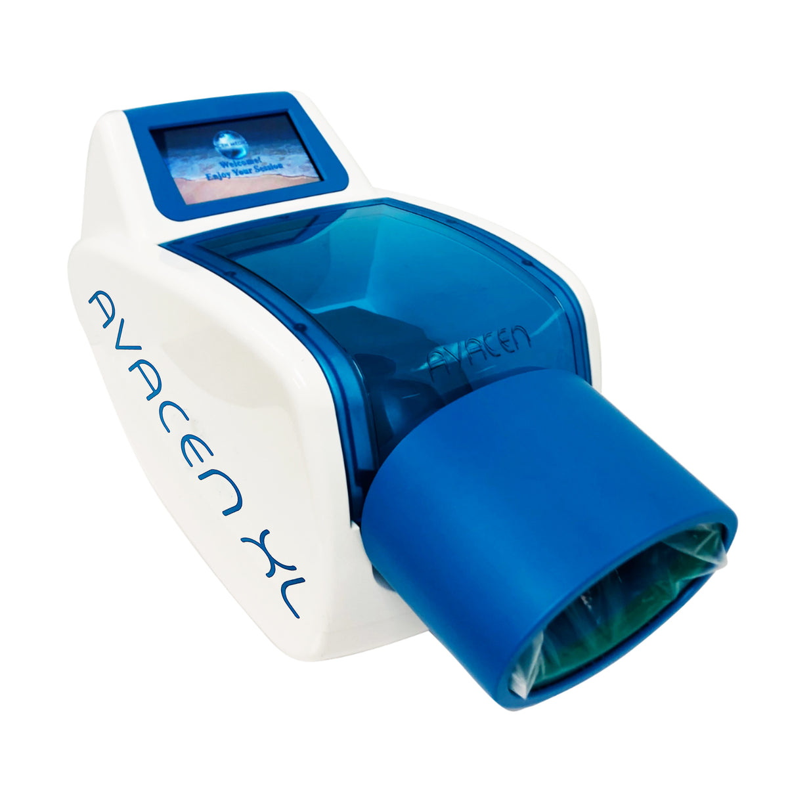

You place one hand inside the AVACEN XL. Gentle warmth and a light vacuum go to work through your palm, and soothing relief travels through your whole body. That's it. That's the treatment.
Yes, I Want Drug-Free Relief 30-day money-back guarantee • 3-year warranty • Made in the USA
The AVACEN XL. Your hand rests inside the chamber. The warmth does the rest.
The slow, careful first steps out of bed. The jar lid you hand to someone else. The stairs you take one at a time, gripping the rail. The knees that forecast the weather better than the evening news.
And the pills. Always the pills. You count them, time them, worry about what they're doing to your stomach, your liver, your kidneys. The relief fades, and the bottle gets lighter, and next month you buy another one.
You've tried the creams that smell like a locker room. The wraps. The heating pad that warms one knee while the other one aches, jealous.
Now imagine a different routine. You sit in your favorite chair. You slip your hand into a warm chamber. You watch TV for 20 minutes. And soothing warmth spreads through your whole body, easing the joint pain and stiffness of arthritis, naturally, with no drugs at all.
That's not a fantasy. It's an FDA-cleared medical device with over 40 million treatments behind it. And it's waiting for your hand.
The AVACEN XL is a noninvasive, over-the-counter heat therapy system, FDA-cleared for the temporary relief of joint pain associated with arthritis, plus minor muscle and joint pain, stiffness, muscle spasms, and more. You use it at home, fully clothed, sitting down. Here's how simple your new routine gets:
Put on a soft, single-use mitt and rest your hand inside the AVACEN chamber. No straps to fight, no wraps to wrestle. Kind to arthritic fingers.
Gentle warmth and a light vacuum work together through your palm. You read, watch TV, or just breathe. The device does everything else.
Your warmed blood circulates naturally through your entire body, easing joint pain and stiffness far beyond the hand it started in.
Your palm holds a remarkable network of blood vessels called arteriovenous anastomoses, or AVAs. They're your body's built-in radiator, designed to move heat fast. When they open, blood can flow through an AVA at up to 1,000 times the rate of a tiny capillary.
The AVACEN uses that doorway in reverse. Its patented combination of gentle heat and negative pressure keeps the vessels in your hand open and warms the blood flowing through them. That warmth slightly thins your blood, and thinner blood glides more easily into the small vessels throughout your body, boosting microcirculation, carrying oxygen in and waste out, and delivering the temporary relief of joint pain and stiffness you've been chasing with pills.
One hand in. Whole body better. In about 20 minutes.
Watch: See what an AVACEN treatment looks and feels like (2 minutes)
No drugs means no drug side effects. Nothing to upset your stomach, tax your liver, or interact with the medications you already take. Just your own warmed blood doing what it was designed to do.
A heating pad warms one spot. The AVACEN warms your circulation itself, so relief reaches your knees, hips, shoulders, back, and both hands, all in the same 20-minute session.
You do it from your recliner with the TV on. No gym clothes, no appointments, no driving across town, no waiting rooms. Twenty minutes you'd have spent sitting anyway.
No buckles, dials, or fiddly straps to fight with sore fingers. Slip on a soft mitt, rest your hand inside, and press start on the bright color touch screen. That's the whole setup.
Temporary relief of joint pain and stiffness means the small victories come back: jar lids, garden gloves, grandkids lifted, stairs taken like you used to take them.
Over 40 million treatments delivered since 2009. It's an FDA-cleared, over-the-counter Class II device, so gentle you can build it into your daily routine like a cup of coffee.
"For the next 5 to 7 days, no pain whatsoever... I felt much more rejuvenated, much fresher."
"All of a sudden, I started doing things without thinking. I just returned to normal function."
"I cannot believe the results I am getting. The biggest thing for me is that I don't have to take any medication."
"We've used this machine over 5,000 treatments... it is safe, it is effective, and I recommend it to all my patients."
A practicing physician, from AVACEN's practitioner reviews
Justine shares her arthritis relief story
Eva's experience with rheumatoid arthritis
The AVACEN Treatment Method has been put under the microscope, literally. In a registered clinical trial (ClinicalTrials.gov ID NCT01619579), participants with chronic widespread pain used the AVACEN at home. Company-reported follow-up results, presented at the Society for Neuroscience annual meeting, showed a reduction of more than 40% in the widespread pain index over 28 days of use.
The device has also been featured in the Biohack Yourself documentary alongside leaders in longevity and wellness. Watch the segment below.
| Pain Pills | Topical Creams | Heating Pad | AVACEN XL | |
|---|---|---|---|---|
| Drug-free | No | No | Yes | Yes |
| Whole-body relief | Yes | One spot | One spot | Yes |
| No stomach, liver, or kidney worries | No | Yes | Yes | Yes |
| FDA-cleared medical device | N/A | No | Rarely | Yes |
| Ongoing monthly cost | Forever | Forever | None | Pennies (mitts) |
| Improves microcirculation | No | No | Local only | Yes, systemically |
Think about what you spend on relief that doesn't last: pills, creams, copays, massage appointments. Over three warrantied years, the AVACEN XL works out to about $4 a day, for a treatment your whole body shares and no prescription can match.
Try it in your own home for 30 days. Use it in your chair, on your schedule, on your worst mornings. If you're not satisfied, return it within 30 days under AVACEN's money-back guarantee (a 15% restocking fee applies). The stiffness you know is guaranteed to stay. The device isn't. That's the point.
The AVACEN is an FDA-cleared, over-the-counter Class II device with more than 40 million treatments delivered since 2009. It's noninvasive and drug-free. As with any therapy, if you have specific medical conditions, check with your doctor first. Most people are pleasantly surprised at how gentle it feels: comfortable warmth on the palm, nothing more.
Your palm contains AVAs, high-volume blood vessels built to move heat fast. The AVACEN warms the blood flowing through them, which slightly thins it and improves microcirculation throughout your body. Relief travels with your own bloodstream, which visits every joint you own.
A standard session takes about 20 minutes, and the device is designed for regular home use. Many owners make it part of their daily routine, morning coffee in one hand, AVACEN on the other.
No. You feel gentle warmth and a light suction on your hand, like a warm handshake that lasts 20 minutes. Most users read or watch TV during treatment.
They're soft single-use liners that keep treatment hygienic and effective. Your device ships with 25, replacements cost pennies per treatment, and using them keeps your 3-year warranty intact.
You have 30 days to find out in your own home, backed by a money-back guarantee (15% restocking fee). And your device carries a full 3-year manufacturer warranty, with the option to upgrade to any AVACEN model for 50% of retail while it's under warranty.
No, and anyone who promises that is selling you something dishonest. The AVACEN is FDA-cleared for the temporary relief of joint pain associated with arthritis, along with minor muscle and joint pain, stiffness, spasms, and improved local circulation. Temporary, repeatable, drug-free relief is exactly what it delivers, and for most people living with arthritis, that's the difference between managing pain and being managed by it.
Or you could be reading the label on another bottle of pills.
You've spent years finding out what doesn't work. This is the one your own circulation delivers, cleared by the FDA, proven across 40 million treatments, and guaranteed in your home for 30 days.
Get Your AVACEN XL Today $500 off • 3-year warranty • 30-day guaranteeP.S. The $500 savings reflects current sale pricing and can end without notice. If your hands ache while you're reading this, you already know why waiting costs more than acting.